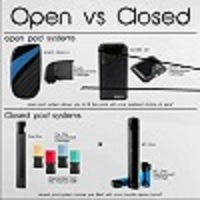
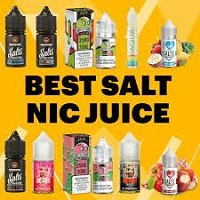

A vape pod is a type of vape that has a battery and a pod instead of a vape tank. A pod still does the same job as a vape tank, it holds the coil and e-liquid, but they are one sealed unit, and some have none replaceable coils, while others are pre-filled with vape juice.
They have risen in popularity because of their nature, they are usually extremely easy to use, essentially a plug and play vape. The original vape pods were designed for smokers making the switch to vaping; but the range of different pod styles has expanded rapidly and there are some great advanced pod mods
|  |  | ||
|---|---|---|---|
| WHO ARE VAPE POD SYSTEMS FOR? | WHAT ARE THE BENEFITS OF VAPE PODS? | DIFFERENT VAPE PODS TYPES – OPEN TANK VS CLOSED TANK | BEST JUICE FOR VAPE PODS |